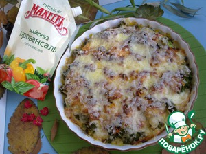

Запеканка из брокколи с мясным фаршем и сыром

Описание: Даже, если вы не любите брокколи, вы обязательно измените свое отношение к этому полезному овощу, когда приготовите простую и невероятно вкусную запеканку из брокколи с мясным фаршем и сыром.
Ингредиенты для "Запеканка из брокколи с мясным фаршем и сыром":
- Брокколи — 500 г
- Фарш мясной — 300 г
- Яйцо куриное — 2 шт
- Сыр твердый — 100 г
- Мука — 2 ст. л.
- Сметана — 2 ст. л.
- Майонез (провансаль "Махеевъ") — 50 г
- Морковь — 1 шт
- Лук репчатый — 1 шт
- Соль (по вкусу)
- Перец черный (молотый, по вкусу)
- Чеснок — 1 зуб.
- Масло растительное (для обжарки)